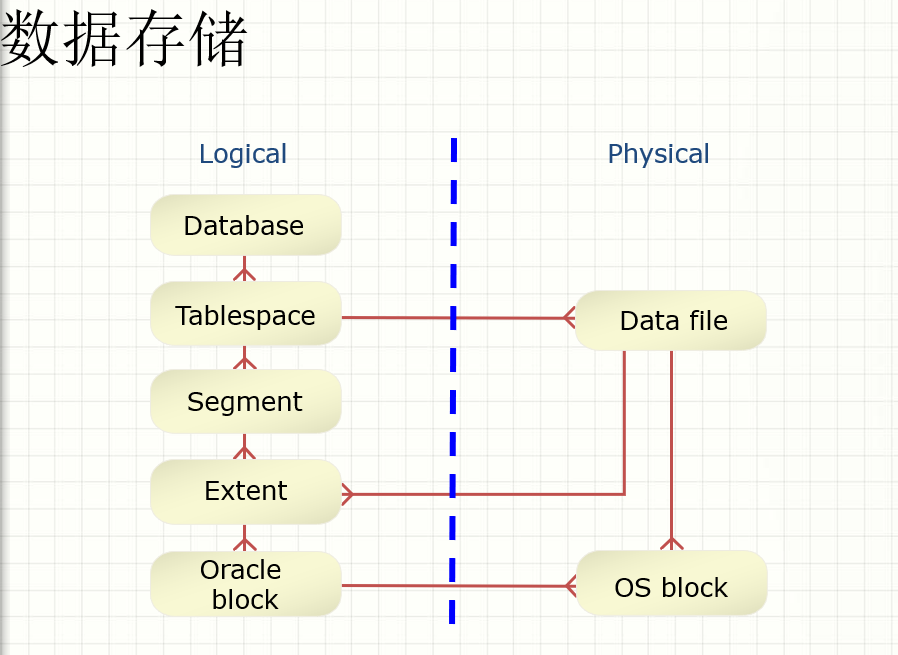

oracle表空间管理

表空间类型
- 系统表空间
- 数据库创建的时候创建
- 存在数据字典
- 存在系统回滚段
- 非系统表空间
- 分隔不同的段
- 对用户对象限制使用空间
创建表空间基本语法
CREATE [UNDO] TABLESPACE tablespace_name
[DATAFILE datefile_spec1 [,datefile_spec2] ......
[{MININUM EXTENT integer [k|m]
|BLOCKSIZE integer [k]
|logging clause | FORCE LOGGING
|DEFAULT {data_segment_compression} storage_clause
|[online|offline]
|[PERMANENT|TEMPORARY]
|extent_manager_clause
|segment_manager_clause}]
* 1、undo
* 说明系统将创建一个回滚表空间。
* 在9i中数据库管理员可以不必管理回滚段，只有建立了undo表空间，系统就会自动管理回滚段的分配，回收的工作。
* 当然,也可以创建一般的表空间,在上面创建回滚段.不过对于用户来说,系统管理比自己管理要好很多.
* 如果需要自己管理,请参见回滚段管理的命令详解.
* 当没有为系统指定回滚表空间时,系统将使用system系统回滚段来进行事务管理。
* //
* 2、tablespace_name
* 指出表空间的名称。
* //
* 3、datafile datefile_spec1
* 指出表空间包含什么空间文件。
* datefile_spec1是形如:[ 'filename' ] [SIZE integer [ K | M ]] [REUSE] [autoextend_clause]
* [autoextend_clause]是形如：AUTOEXTEND { OFF | ON [ NEXT integer [ K | M ] ] [maxsize_clause] }
* 其中filename是数据文件的路径名，可以是相对路径，也可以是绝对路径。
* size是文件的大小,
* REUSE表示文件是否被重用.
* AUTOEXTEND表明是否自动扩展.
* OFF | ON 表示自动扩展是否被关闭.
* NEXT 表示数据文件满了以后,扩展的大小.
* maxsize_clause表示数据文件的最大大小.形如MAXSIZE { UNLIMITED | integer [ K | M ] }.
* UNLIMITED 表示无限的表空间.
* integer是数据文件的最大大小.
* DATAFILE 'D:"oracle"oradata"IMAGEDATA01.dbf' SIZE 2000M,
* 'D:"oracle"oradata"IMAGEDATA02.dbf' SIZE 2000M
* //
* 4、MININUM EXTENT integer [k|m]
* 指出在表空间中范围的最小值。这个参数可以减小空间碎片，保证在表空间的范围是这个数值的整数倍。
* //
* 5、BLOCKSIZE integer [k]
* 这个参数可以设定一个不标准的块的大小。如果要设置这个参数，必须设置db_block_size,
* 至少一个db_nk_block_size,并且声明的integer的值必须等于db_nk_block_size.
* 注意：在临时表空间不能设置这个参数。
* //
* 6、logging clause
* 这个子句声明这个表空间上所有的用户对象的日志属性（缺省是logging），
* 包括表，索引，分区，物化视图，物化视图上的索引，分区。
* //
* 7、FORCE LOGGING
* 使用这个子句指出表空间进入强制日志模式。此时，系统将记录表空间上对象的所有改变，除了临时段的改变。
* 这个参数高于对象的nologging选项。
* 注意：设置这个参数数据库不行open并且出于读写模式。而且，在临时表空间和回滚表空间中不能使用这个选项。
* //
* 8、DEFAULT storage_clause
* 声明缺省的存储子句。
* //
* 9、online|offline
* 改变表空间的状态。online使表空间创建后立即有效.这是缺省值.
* offline使表空间创建后无效.这个值，可以从dba_tablespace中得到。
* //
* 10、PERMANENT|TEMPORARY
* 指出表空间的属性，是永久表空间还是临时表空间。
* 永久表空间存放的是永久对象，临时表空间存放的是session生命期中存在的临时对象。
* 这个参数生成的临时表空间创建后一直都是字典管理，不能使用extent management local选项。
* 如果要创建本地管理表空间，必须使用create temporary tablespace
* 注意，声明了这个参数后，不能声明block size
* //
* 11、extent_management_clause
* 这是最重要的子句，说明了表空间如何管理范围。一旦你声明了这个子句，只能通过移植的方式改变这些参数。
* 如果希望表空间本地管理的话，声明local选项。本地管理表空间是通过位图管理的。
* autoallocate说明表空间自动分配范围，用户不能指定范围的大小。只有9.0以上的版本具有这个功能。
* uniform说明表空间的范围的固定大小，缺省是1m。
* 不能将本地管理的数据库的system表空间设置成字典管理。
* oracle公司推荐使用本地管理表空间。
* 如果没有设置extent_management_clause，oracle会给他设置一个默认值。
* 如果初始化参数compatible小于9.0.0,那么系统创建字典管理表空间。
* 如果大于9.0.0,那么按照如下设置：
* 如果没有指定 default storage_clause,oracle创建一个自动分配的本地管理表空间。
* 否则，
* 如果指定了mininum extent,那么oracle判断mininum extent 、initial、next是否相等,以及pctincrease是否=0.
* 如果满足以上的条件，oracle创建一个本地管理表空间，extent size是initial.
* 如果不满足以上条件，那么oracle将创建一个自动分配的本地管理表空间。
* 如果没有指定mininum extent。initial、那么oracle判断next是否相等,以及pctincrease是否=0。
* 如果满足oracle创建一个本地管理表空间并指定uniform。否则oracle将创建一个自动分配的本地管理表空间。
* 注意：本地管理表空间只能存储永久对象。
* 如果你声明了local,将不能声明 default storage_clause,mininum extent、temporary.
* EXTENT MANAGEMENT LOCAL
* //
* 12、segment_management_clause
* 段空间管理的方式，自动或者手动:
* SEGMENT SPACE MANAGEMENT {AUTO|MANUAL}
查看表空间
SQL> select tablespace_name,file_name,bytes from dba_data_files;

大文件表空间
- 大文件表空间(bigfile tablespaces)
- Oracle Database允许你创建大文件表空间,大文件表空间由单个文件组成
- 最大可以包含4G(2^32)个blocks.
- 大文件表空间使得Oracle获得如下收益:
- 显著的增强了Oracle数据库的存储容量
- 检查点的性能提升
- 对于8k的blocks,最大数据文件可以达到32T；对于32K的blocks，最大数据文件可达128T
- 缩减了超大型数据库的数据文件的数量
- 简化了管理
创建大文件表空间
SQL> create bigfile tablespace bigtbs datafile '/oracle/11g/oradata/oracle/bigtbs.dbf' size 1G;
Tablespace created.
对于大文件 表空间，只能为LMT（本地管理表空间）和ASSM（自动段空间管理）管理
SQL> select TABLESPACE_NAME,EXTENT_MANAGEMENT,
SEGMENT_SPACE_MANAGEMENT from dba_tablespaces where tablespace_name='BIGTBS'; 2
TABLESPACE_NAME EXTENT_MAN SEGMEN
--------------------------- ---------- ------
BIGTBS LOCAL AUTO
对于undo、temp、system表空间可以使LMT+MANUAL
oracle默认采用小文件表空间，可以使用以下sql查看
SQL> SELECT PROPERTY_VALUE FROM DATABASE_PROPERTIES WHERE PROPERTY_NAME = 'DEFAULT_TBS_TYPE';
PROPERTY_VALUE
--------------------------------------------------------------------------------
SMALLFILE
更改默认表空间方式
system@MYSQL_MA> ALTER DATABASE SET DEFAULT BIGFILE TABLESPACE;
Database altered.
表空间的空间管理
在Oracle8i的版本中，Oracle推出了一种全新的表空间管理方式：本地化管理的表空间。所谓本地化管理，就是指Oracle不再利用数据字典表来记录Oracle表空间里面的区的使用状况，而是在每个表空间的数据文件的头部加入了一个位图区，在其中记录每个区的使用状况。每当一个区被使用，或者被释放以供重新使用时，Oracle都会更新数据文件头部的这个记录，反映这个变化。
本地化管理的表空间的创建过程：
语法：
CREATE TABLESPACE 表空间名字
DATAFILE '数据文件详细信息'
[EXTENT MANAGEMENT { LOCAL
{AUTOALLOCATE | UNIFORM [SIZE INTETER [K|M]]}}]
关键字EXTENT MANAGEMENT LOCAL 指定这是一个本地化管理的表空间。对于系统表空间，只能在创建数据库的时候指定EXTENT MANGEMENT LOCAL，因为它是数据库创建时建立的第一个表空间。
在8i中，字典管理还是默认的管理方式，当选择了LOCAL关键字，即表明这是一个本地管理的表空间。当然还可以继续选择更细的管理方式：是 AUTOALLOCATE 还是 UNIFORM。若为AUTOALLOCATE，则表明让Oracle来决定区块的使用办法；若选择了UNIFORM，则还可以详细指定每个区块的大小，若不加指定，则为每个区使用1M大小。
Oracle之所以推出了这种新的表空间管理方法，让我们来看一下这种表空间组织方法的优点：
1. 本地化管理的表空间避免了递归的空间管理操作。而这种情况在数据字典管理的表空间是经常出现的，当表空间里的区的使用状况发生改变时，数据字典的表的信息发生改变，从而同时也使用了在系统表空间里的回滚段。
2. 本地化管理的表空间避免了在数据字典相应表里面写入空闲空间、已使用空间的信息，从而减少了数据字典表的竞争，提高了空间管理的并发性
3. 区的本地化管理自动跟踪表空间里的空闲块，减少了手工合并自由空间的需要。
4. 表空间里的区的大小可以选择由Oracle系统来决定，或者由数据库管理员指定一个统一的大小，避免了字典表空间一直头疼的碎片问题。
5. 从由数据字典来管理空闲块改为由数据文件的头部记录来管理空闲块，这样避免产生回滚信息，不再使用系统表空间里的回滚段。因为由数据字典来管理的话，它会把相关信息记在数据字典的表里，从而产生回滚信息。
由于这种表空间的以上特性，所以它支持在一个表空间里边进行更多的并发操作，并减少了对数据字典的依赖。
LMT（本地表空间管理）
- 本地管理表空间:
- 在表空间里面管理自由的范围
- Bitmap用于记录自由的范围
- 每位对应一个block或者一组block
- 位的值表明空闲或者被使用
- 减少在数据字典中的竞争
- 当空间分配或释放时不产生回滚信息
- 不需要表空间空闲空间的合并
示例：
SQL> CREATE TABLESPACE tbs
DATAFILE '/oracle/11g/oradata/oracle/tbs01.dbf' SIZE 500M
EXTENT MANAGEMENT LOCAL UNIFORM SIZE 128K; ##指定每个区的大小为128K，也可以使用autoallocate
Tablespace created.
DMT（数据字典表空间管理，已经被弃用）
回滚表空间
- 用于存储回滚段
- 不能包含任何其他对象
- 区是本地管理的
SQL> CREATE UNDO TABLESPACE undo01
DATAFILE '/oracle/11g/oradata/oracle/undo01.dbf' SIZE 40M;
Tablespace created.
临时表空间
- 用于排序操作
- 可以被多个用户共享
- 不能存在任何永久的对象
SQL> CREATE TEMPORARY TABLESPACE temp
TEMPFILE '/oracle/11g/oradata/oracle/temp01.dbf' SIZE 20M
EXTENT MANAGEMENT LOCAL UNIFORM SIZE 4M;
系统的默认临时表空间
限制：
- 只能在创建一个新的默认临时表空间后原来的才可以删除
- 不能离线
- 不能修改为一个永久的表空间
只读表空间
设置表空间为只读状态，将会有以下影响：
- 引起一个检查点
- 数据只能被读取
- 表空间中的对象能被删除
使用下面sql把表空间设置为只读/读写状态
SQL> ALTER TABLESPACE tbs READ ONLY;
Tablespace altered.
SQL> ALTER TABLESPACE tbs READ WRITE;
Tablespace altered.
离线/在线表空间
若表空间离线，将会有以下影响：
- 表空间中的所有数据都不能被访问
- 有些表空间是不能被离线的:
- 系统表空间
- 存在激活的回滚段的表空间
- 默认的临时表空间
使用以下sql把表空间设置为离线/在线状态
SQL> ALTER TABLESPACE tbs OFFLINE;
Tablespace altered.
SQL> ALTER TABLESPACE tbs ONLINE;
Tablespace altered.
修改表空间大小
1）在创建表空间的时候指定自动增长
SQL> CREATE TABLESPACE tbs
DATAFILE '/u01/oradata/tbs01.dbf' SIZE 200M
AUTOEXTEND ON NEXT 10M MAXSIZE 500M;
2）修改表空间数据文件的大小
- 手工使用ALTER DATABASE增大或减小一个数据文件的大小
- 增大数据文件的空间不用增加更多的数据文件
- 手工改变数据文件的大小是回收未用的空间
SQL> ALTER DATABASE
DATAFILE '/u03/oradata/tbs02.dbf'
RESIZE 200M;
3）增加表空间的数据文件
- 增大表空间大小通过增加数据文件
- ADD DATAFILE语句用于增加数据文件
SQL> ALTER TABLESPACE tbs
ADD DATAFILE '/u01/oradata/tbs03.dbf'
SIZE 200M;
移动表空间数据文件
1）ALTER DATABASE
- ALTER DATABASE
- 数据库必须(需要)在MOUNT状态
- 目标数据文件必须存在
SQL> ALTER DATABASE RENAME
FILE '/u01/oradata/tbs01.dbf'
TO '/u03/oradata/tbs01.dbf';
2）ALTER TABLESPACE
- ALTER TABLESPACE
- 表空间必须离线
- 目标数据文件必须存在
SQL> ALTER TABLESPACE tbs RENAME
DATAFILE '/u01/oradata/tbs01.dbf'
TO '/u02/oradata/tbs01.dbf';
重命名表空间名
- Oracle允许使用rename命令直接修改表空间名称，数据文件名称不会随之改变。
SQL> alter tablespace TBS rename to TBS_NEW;
Tablespace altered.
删除表空间
- 下列情况不能删除表空间:
- 系统表空间
- 有激活段的表空间
- INCLUDING CONTENTS将删除段
- INCLUDING CONTENTS AND DATAFILES将删除数据文件
- CASCADE CONSTRAINTS将删除所有一致性的限制
SQL> DROP TABLESPACE tbs_new
INCLUDING CONTENTS AND DATAFILES;
Tablespace dropped.
--删除空的表空间，但是不包含物理文件
drop tablespace tablespace_name;
--删除非空表空间，但是不包含物理文件
drop tablespace tablespace_name including contents;
--删除空表空间，包含物理文件
drop tablespace tablespace_name including datafiles;
--删除非空表空间，包含物理文件
drop tablespace tablespace_name including contents and datafiles;
--如果其他表空间中的表有外键等约束关联到了本表空间中的表的字段，就要加上CASCADE CONSTRAINTS
drop tablespace tablespace_name including contents and datafiles CASCADE CONSTRAINTS;
获取表空间相关信息
获取表空间和数据文件的信息:
表空间信息:
DBA_TABLESPACES
V$TABLESPACE
数据文件信息:
DBA_DATA_FILES
V$DATAFILE
临时数据文件信息:
DBA_TEMP_FILES
V$TEMPFILE